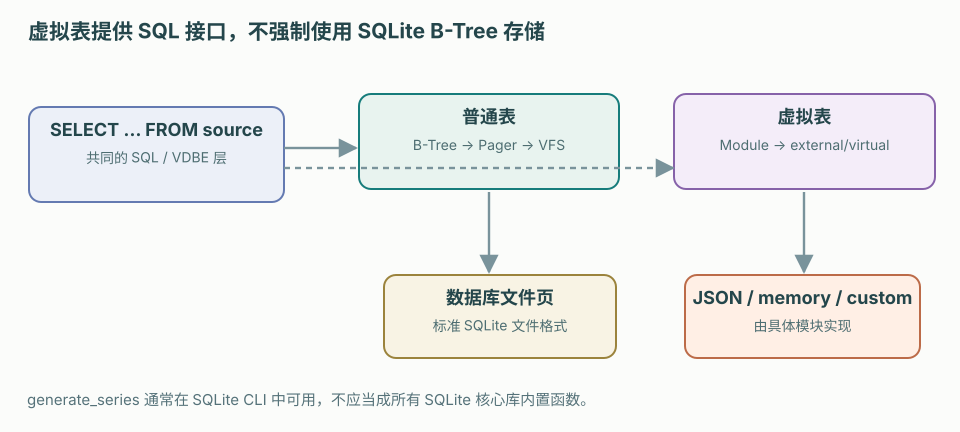
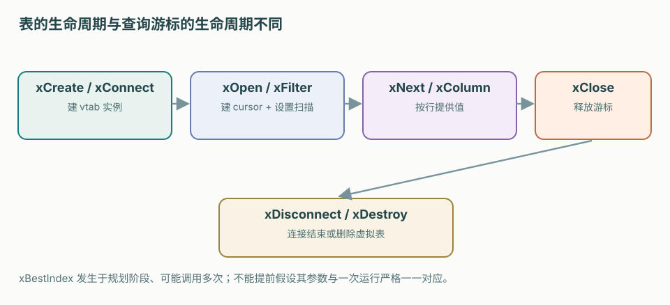
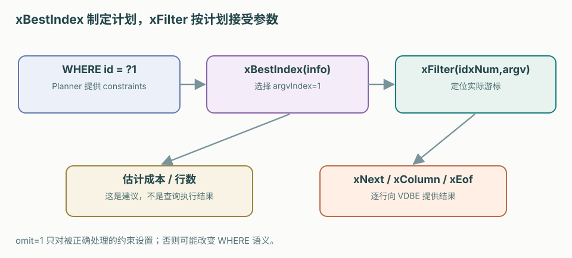

虚拟表：xBestIndex 协商、游标执行与真实模块
虚拟表不是自动创建的另一棵 B-Tree；通过实际 C 模块理解 xBestIndex、xFilter、xColumn 的执行时机与约束正确性。
1. 没有 B-Tree 的表，为什么能使用 SELECT？
普通 SQLite table 主要使用 B-Tree / Pager 管理记录，但 Virtual Table 将数据源交给应用模块：可以是内存数组、JSON、外部文件或计算得到的行。SQL 层仍能做列选择、WHERE、JOIN 等操作；虚拟表不意味着 SQLite 自动为模块生成 B-Tree。

例如 json_each() 可以把 JSON 数组展开为多行；它的存在取决于该 SQLite build 的扩展支持。源码入口包括 src/vtab.c、公开的 sqlite3_module 与具体模块实现。参见 官方虚拟表说明。
2. 模块、虚拟表实例与游标有三种不同生命期
sqlite3_module 是一张回调函数表；sqlite3_vtab 是连接中的虚拟表实例；sqlite3_vtab_cursor 是一次扫描的游标。查询准备时可能调用 xBestIndex() 多次，而实际行读取由 xFilter() 等执行期回调完成。

| 回调 | 职责 |
|---|---|
xCreate/xConnect | 建立表实例、用 sqlite3_declare_vtab 声明 schema |
xBestIndex | 描述可以利用的条件和估计成本 |
xOpen/xFilter | 建立游标，按参数开始扫描 |
xNext/xEof/xColumn/xRowid | 逐行输出 SQL 值 |
xClose/xDisconnect/xDestroy | 分别清理游标/表实例资源 |
3. WHERE id=2 怎样下推到 xFilter？
准备语句期间，Planner 通过 sqlite3_index_info 把候选约束送给 xBestIndex。模块检查列位置、操作符与 usable 标记，决定是否设置 aConstraintUsage[i].argvIndex=1 并用自己的 idxNum 标记方案。执行语句时，对应的右侧值才传给 xFilter。

不要在近似过滤时随意设置 omit=1。这会允许 SQLite 省掉某条约束的后续检查。示例模块为了清楚展示职责，将等值过滤用于定位候选行，但不设置 omit，让 SQLite 再判断一次 SQL 等值语义，避免 TEXT/REAL/NULL 等输入转换的错误。官方字段定义见 Indexing Information。
4. 游标如何提供一行，而不是把数组一次传给 SQL？
项目实现的只读模块维护三个固定数据项：(1,'one')、(2,'two')、(3,'three')。无 WHERE 时，xFilter 使扫描从第 1 行开始；xNext 继续，xEof 判断结束，xColumn 通过 sqlite3_result_* 交回一列值。
而 WHERE id=2 的计划可让模块把 cursor 直接定位到第二个候选项。即使 xFilter 做了初步过滤，外层 SQLite 对未省略的 WHERE 谓词仍负责确认语义，这对于不完全一致的 SQL 类型转换尤其重要。
5. 从 C API 注册到查询的完整可执行模块
examples/20_vtab_rows.c 使用 sqlite3_create_module() 注册 toyrows，然后执行 CREATE VIRTUAL TABLE vt USING toyrows。它提供必要的 create/connect、索引规划、游标输出及释放回调，并验证两个结果：全表恰好三行，查询 id=2 恰好返回 two。
cc -std=c11 -Wall -Wextra -Werror -O2 \
examples/20_vtab_rows.c -lsqlite3 -o /tmp/sqlite-20-vtab
/tmp/sqlite-20-vtab
# PASS: virtual table scan=3, id=2 returns two该模块完全在程序内部给出静态数据，不依赖 JSON1 或第三方扩展预装。使用 .iVersion=1 的基础 module 接口，同时明确只读（没有 xUpdate）；这是可理解的最小实现，不是可以直接处理不可信输入的生产级存储系统。
6. generate_series、json_each 与安全加载
generate_series(START,STOP,STEP) 是 SQLite 源码树提供的扩展，通常编译进 sqlite3 命令行 Shell；**不能因此断言所有 SQLite 核心库或 Python sqlite3 绑定都自带它**。json_each() 也是表值函数，但要确认目标构建支持 JSON 相关功能。
SELECT key, value
FROM json_each('[10,20,30]')
ORDER BY CAST(key AS INTEGER);
-- 0 | 10, 1 | 20, 2 | 30此语句保存为 examples/20_json_virtual.sql 作为可选扩展实验；主要自动测试依赖自编译的模块，以免因 build 配置差异误判教程。动态加载外部扩展需明确来源和应用的安全策略，不应为不可信 SQL 任意启用库加载权限。
源码阅读任务
- 找到自己的 xBestIndex 对 argvIndex、idxNum 和 estimatedCost 的设置；
- 说明为什么 omit 设为 0 对这个示例更安全；
- 在 xFilter / xColumn 中对照具体的输入参数和输出结果；
- 区分模块代码、表 schema 和模块数据三类持久性。
自测：xBestIndex 为什么不在查询前返回全部行？
它用于规划时的候选访问方式和成本协商，真正结果需要在 sqlite3_step 执行期间由游标的 xFilter、xNext、xColumn 等回调产生。
官方原始资料与版本边界
回调函数的公开接口以官方 C API 为准，示例是最小只读模块；不承诺对所有类型、存储场景、并发工作负载或扩展构建都适用。
- Virtual Table Mechanism · SQLite 官方
- Indexing Information · SQLite 官方
- generate_series Extension · SQLite 官方
- JSON Table-Valued Functions · SQLite 官方
- Create Module C API · SQLite 官方